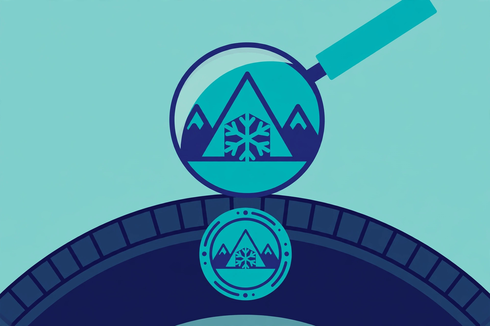

This site names no brands and recommends no models — not because all tires are equal, but because the right tire depends on your vehicle, your roads, and your winter. What doesn't change is the checklist. Here is what to look for on any winter tire, new or used.
1. The mountain-snowflake symbol (3PMSF)
Look on the sidewall for a three-peaked mountain with a snowflake inside it. This is the 3PMSF symbol — three-peak mountain snowflake — and it means the tire passed a standardized traction test on medium-packed snow. It's a performance mark, earned by testing, not by how the tread looks.
Don't confuse it with M+S (mud and snow). M+S is a tread-pattern designation — it describes the shape of the tread, not tested winter performance. Many all-season tires carry M+S. For genuine cold-weather capability, the snowflake is the mark that counts. In Quebec, it (or an equivalent winter designation) is what satisfies the mandatory rule.
2. Sizing: match the vehicle, not the tire
The correct size for your car is on the driver's door-jamb placard and in the owner's manual — not on the tire currently mounted (a previous owner may have changed it). The size code on a sidewall reads as three values: tread width, sidewall height as a percentage of the width (the "aspect ratio"), and wheel diameter. You don't need to memorize this; you need to know that all three must match the placard.
Two related details worth checking:
- Load index: a number on the sidewall indicating how much weight the tire can carry. The replacement must meet or exceed your vehicle's requirement — never go below it.
- Speed rating: a letter indicating the tire's rated speed. Winter tires often carry a lower speed rating than the summer tires they replace, which is fine as long as it meets the vehicle's minimum.
If a deal involves a different size than your placard, walk away or get a professional's sign-off first. Wrong sizing affects the speedometer, clearance, and handling.
3. Tire age: read the DOT code
Rubber ages even sitting on a shelf. Every tire carries a DOT code on the sidewall, ending in four digits: the first two are the production week, the last two the year. So a code ending in 2319 means the 23rd week of 2019. A tire from several years ago that's never been mounted is still an older tire — compounds harden with time regardless of tread.
For new purchases, check the age before the tires are mounted — "new old stock" is a real thing. For used sets, age is one of the first things to check; our used-tire inspection guide covers the full walkthrough.
When comparing two otherwise similar tires, take the younger one. Age is the invisible variable in tire shopping — two tires can look identical while one has spent five extra years hardening on a warehouse shelf. That's our opinion, and it costs nothing to act on: just read the code.
4. Studded vs. studless
Studded tires embed small metal pins for bite on bare ice; studless tires rely on compound and siping. The trade-offs are straightforward:
- Studded: best on glare ice; noisier, harsher on dry pavement, and they chew up roads — so many provinces and municipalities restrict them to a winter window or ban them outright. Always check your local rules before buying.
- Studless: quieter, fine to run all winter everywhere, and modern compounds have closed most of the ice gap. For most Canadian drivers, this is the default choice.
Unless you regularly drive untreated rural roads or live somewhere with sustained ice, studless is almost certainly the simpler pick.
5. Consider a second set of wheels
Buying a set of basic steel wheels for your winter tires has two payoffs: mounting and balancing twice a year is cheaper and faster (often a quick swap instead of a full mount-and-balance), and your good alloy wheels avoid a winter of road salt. If you buy used tires already mounted on wheels, verify the bolt pattern, offset, and hub bore fit your vehicle — "fits a Honda" is not a specification.
Questions worth asking the seller or shop
- What's the DOT production date on these tires?
- Do they carry the 3PMSF mountain-snowflake symbol?
- Are the load index and speed rating at or above my vehicle's placard?
- What's included — mounting, balancing, new valve stems, disposal of the old set?
- If used: what's the tread depth on each tire, and do all four match?
A seller who can't or won't answer the first three is a seller to skip.
Tires are the only part of your car that touches the road. If anything here is unclear for your specific vehicle, a qualified tire professional can confirm sizing and fitment in minutes. This guide is general information, not professional advice.
The bottom line
Snowflake symbol, correct size and load rating, fresh production date, four matching tires. Get those four things right and the brand on the sidewall matters far less than the salesperson implies.